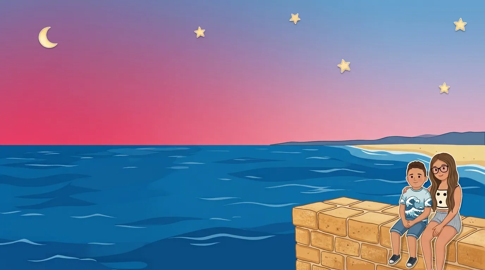

Explore the scenes
No rules, no timer, no score. Children wander a day at the beach or the world under the sea, and tap anything they like, as often as they like. Every object says its own name and shows how it's written.


About the game
Simple, everyday words in Maltese and English, using the world around them as their classroom.
This game was created by Ryan Gosden to help children learn simple, everyday words in Maltese and English, using the world around them as their classroom.
The game focuses on familiar objects, places, animals and things children encounter in their everyday surroundings. By seeing, hearing and interacting with these words in a fun and playful way, children can begin building their vocabulary naturally.
It was made with the idea that learning a language should feel natural, enjoyable and part of everyday life. Whether a child is learning Maltese, English, or both, we hope it encourages curiosity, recognition and a love of words.

How it plays
No rules, no timer, no score. Children wander a day at the beach or the world under the sea, and tap anything they like, as often as they like. Every object says its own name and shows how it's written.

Find the objects the game asks for, three ways: pictures show what to look for, sounds play the word to find, and words appear in writing for children beginning to read. Every find is celebrated with its name, a chime and the spoken word.

Drag things from the tray onto the scene, wherever you like. Tap one to hear its name, move it around, and save up to five scenes to find again in My Scenes.
The people behind it
Published by OctoByte Studios.
Artwork. Some of the artwork began as stock illustrations, redrawn and restyled for this game. Images by Freepik (freepik.com). Beach backgrounds by CraftPix (craftpix.net).
Sounds. Success sound and underwater ambience by DRAGON-STUDIO from Pixabay. Find chime by freesound_community from Pixabay. Beach atmosphere by julius_galla from Freesound.
This website uses the Baloo 2 and Nunito typefaces, under the SIL Open Font License.